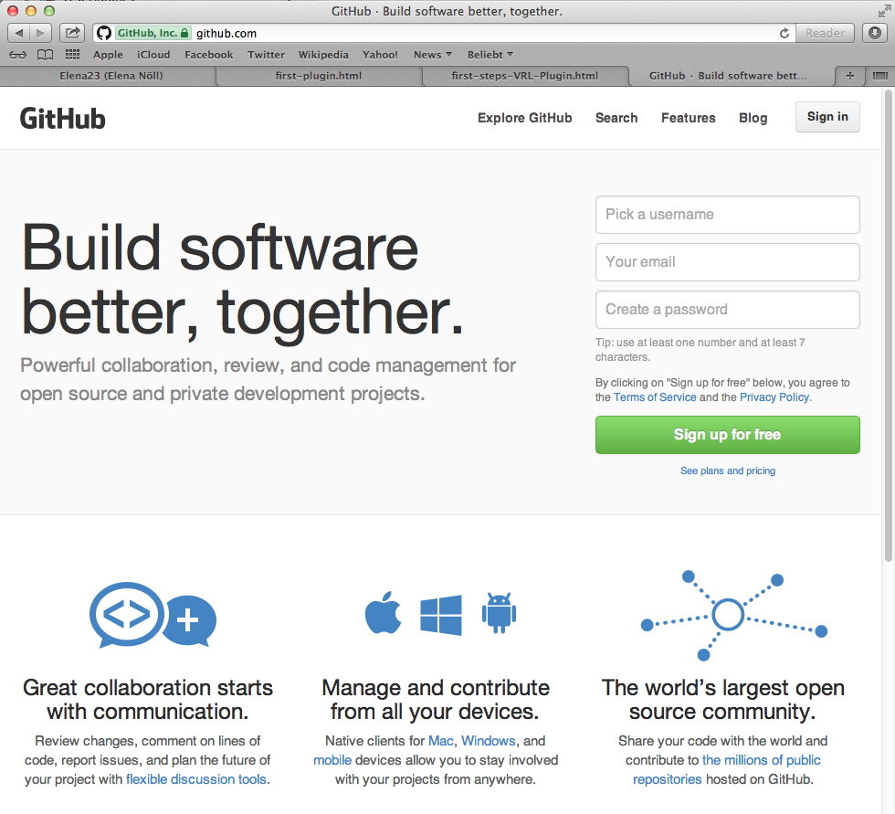
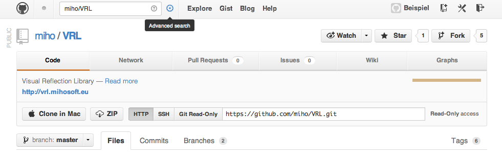
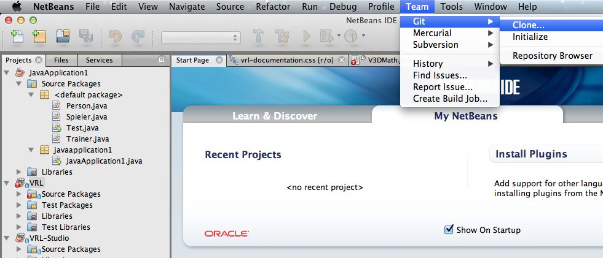
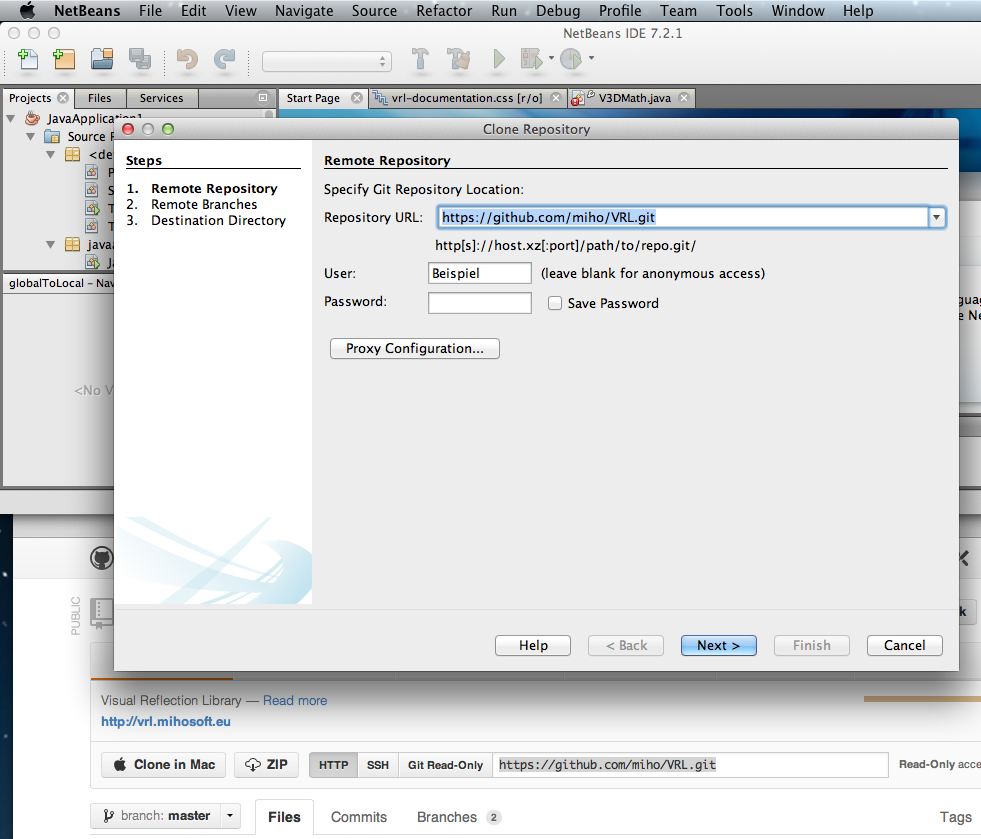
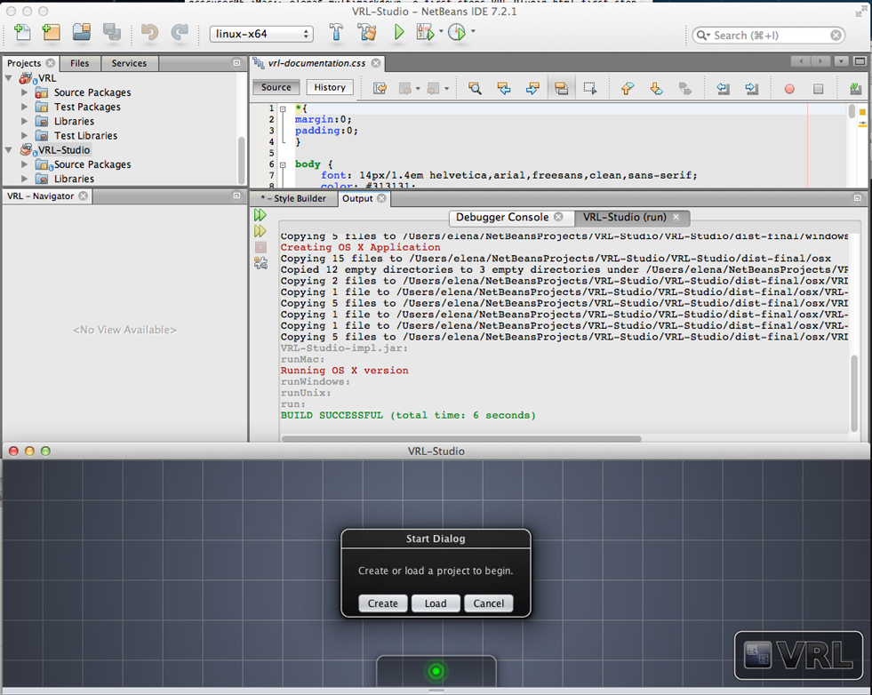
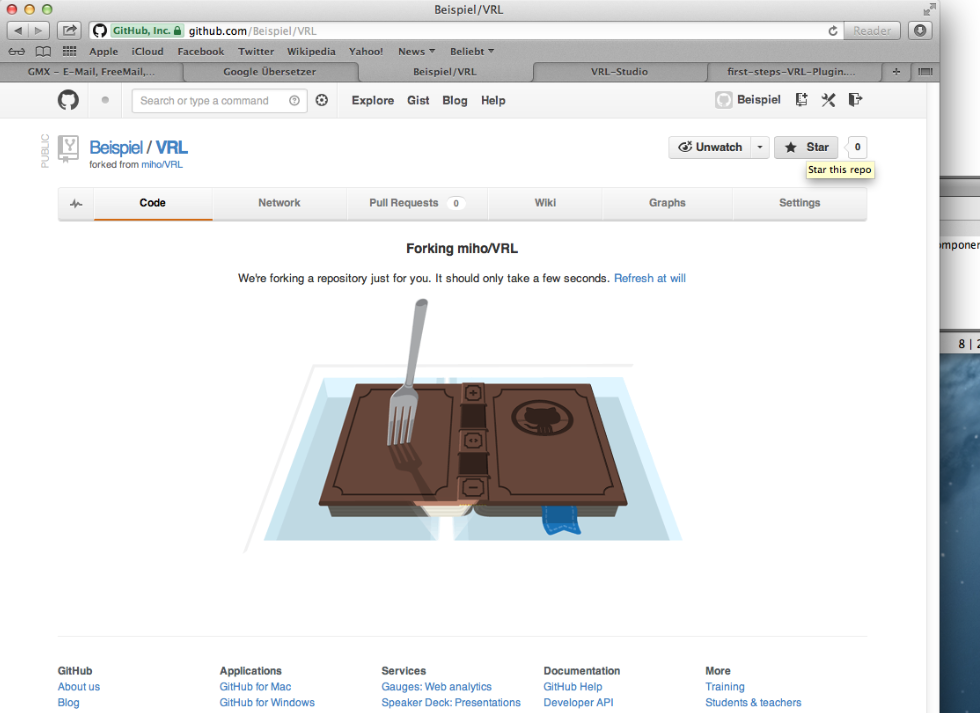
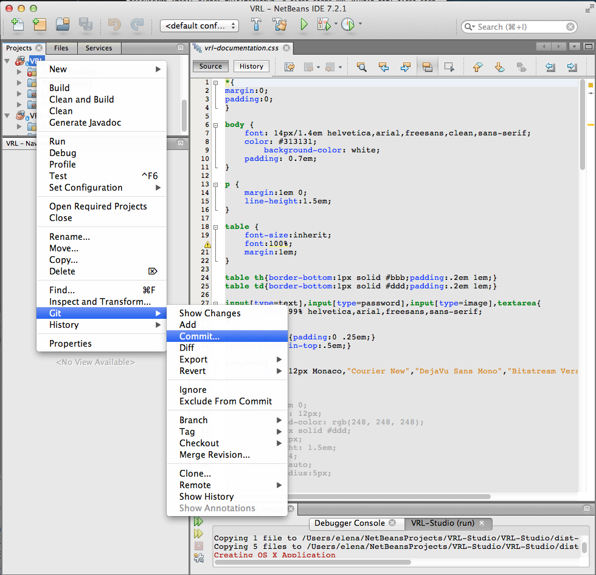
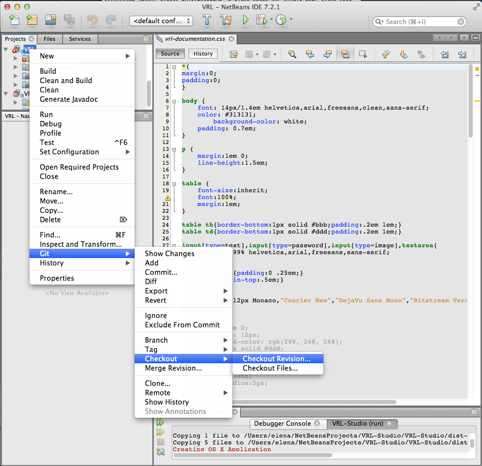

Your first steps before you start with the VRL - Plugin:
Contents
Install NetBeans
Download and instal Java (JDK) >=1.6, for example from: http://www.oracle.com/technetwork/java/javase/downloads/index.html .
Download and install a suitable version (>=7.01) of NetBeans, for example from: http://netbeans.org/downloads/ .
Recommended literature for java-programming .
Creating a new user at GitHub
GitHub is a web-based hosting service for software development projects that use the Git revision control system. Documentation .
Go to GitHub and:
Pick a username; Your email; Create a password, click on Sign up for free;

Creating a new user
For a better understanding of how GitHub works, look at the page: http://ndpsoftware.com/git-cheatsheet.html .
Choose:
working just on the plugins (1. or 2.)
or also on VRL, VRL-Studio (3.)
1.
If you want to work only on the plugins for VRL-Studio and you’re not reliant on latest version, then:
2.
If you want to work only on the plugins for VRL-Studio and you’re reliant on latest version, then:
clone repository from GitHub:
Find repository of VRL-Project. Enter miho/VRL in search mask on the top left of the page:
(see Figure Repository of VRL-Project ); Enter.
Copy from GitHub the link below “Git Read-Only” (for example: https://github.com/miho/VRL.git):

Repository of VRL-Project
Open NetBeans;
Go to the top menu Team -> Git -> Clone (to clone repository);

NetBeans-Git-Clone
Insert into your open window “Clone Repository”; also User und Password; click on Next;

Clone-VRL-Repository
Then choose “master”; then Next; then Finish.
Compile in NetBeans the Project VRL.
Repeat for VRL-Studio.

Run VRL, VRL-Sudio
Now you have everything to write the VRL-Plugins. Next see here .
3.
If you want to work also on the plugins as well as on VRL and VRL-Studio, then:
fork repository from GitHub:
find repository of VRL-Project. Enter miho/VRL in search mask on the top left of the page;Enter;
fork repository of VRL-Project (click on the button “Fork” above right) and wait:

and then clone repository “your-name/VRL”, “your-name/VRL-Studio” from GitHub, similar to this: clone repository .
Additional important functions of GitHub:
to load your changing version of the project in GitHub:
right mouse-click on your project in NetBeans
-> Git -> Add; then
-> Git -> Commit… then
-> Git Remote -> Push.

Commit Project
to clone repository (fetch latest version):
right mouse-click on your project in NetBeans -> Git -> Checkout -> Checkout Revision…

Checkout Project
For more information see Git - Documentation here: http://git-scm.com/doc .
Markdown
Markdown is a lightweight markup language, allowing people “to write using an easy-to-read, easy-to-write plain text format, then convert it to structurally valid XHTML (or HTML).
You need it in order to write your documentation.
Install Markdown, for example from: hhttp://fletcherpenney.net/multimarkdown/download/ .
Install txt-Editor, for example TextMate, from: http://textmate.softonic.de/mac .
For Info:
Table with Styles for VRL-Projects you can find in your VRL -> Source Packages -> eu.mihosoft.vrl.rootplugin.content.help -> help.zip -> resources.css -> vrl-documentation.css
Write your documentation in txt-Editor and save it “name.md”
Call the Terminal, run the MarkDown, compile your file “name.md and produce new file ”name.html".
Example: gcscuser06-iMac:~ user$ multimarkdown -o name.html -t html name.md
{kind=link}
{kind=link}
{kind=link}